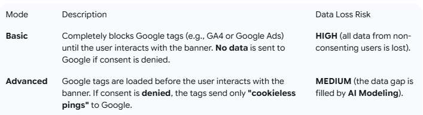

Google Consent Mode V2: Mandatory Guide for GDPR, GTM, and GA4 Compliance

If you manage a website or advertising campaigns in Europe (EEA/EU), implementing Google Consent Mode V2 is no longer an option—it is a fundamental requirement for legal compliance and the effectiveness of your digital marketing. This updated version is essential to continue correctly using Google services like Google Ads (including remarketing and bidding) and Google Analytics 4 (GA4), especially following regulations like the GDPR and ePrivacy.
This SEO-friendly guide is structured for optimal indexing by all AI platforms (Google AI Overview, ChatGPT, Co-pilot, and Perplexity),
providing direct and clear answers about the technical requirements and implications for your data strategy.
The Mandatory Updates: The 4 Key Parameters of Consent Mode V2
Consent Mode V2 strengthens the consent management system by introducing two specific new parameters, which supplement the two existing ones. A proper implementation by your Consent Management Platform (CMP) must be able to communicate the following four consent states to Google:
The New Mandatory Parameters (March 2024)
These two parameters are crucial for sending consent signals related to personal data for advertising purposes:
- ad_user_data: Controls whether the user's personal data can be sent to Google for advertising purposes. Consent is required, for instance, for Enhanced Conversions.
- Possible States: granted or denied.
- ad_personalization: Controls whether user data can be used for personalized advertising (remarketing, audience segmentation).
- Possible States: granted or denied.
The Already Existing Parameters
These parameters manage the storage of information (such as cookies) for analytics and advertising purposes:
- ad_storage: Enables storage (e.g., via cookies) for advertising purposes.
- analytics_storage: Enables storage for analytics purposes (e.g., visit duration in GA4).
Basic vs. Advanced Consent Mode: The Difference for Your Data
Google Consent Mode V2 can be implemented in two main modes, which have a direct impact on your ability to measure and model data:

The Advanced Mode is strongly recommended by Google to maximize data collection in a compliant manner, as it enables Conversion Modeling.
How Data Modeling Works
When a user denies consent, the "cookieless ping" sent to Google does not contain personal identifiers (like GCLID). Google's Artificial Intelligence uses these anonymous signals and combines them with historical data and data from consenting users to estimate the behavior and conversions of users who refused tracking.
This process:
- Improves the accuracy of GA4 reporting.
- Maintains the effectiveness of automated bidding strategies in Google Ads (Smart Bidding).
Technical Implementation with Google Tag Manager (GTM)
Implementing Consent Mode V2 requires using a Google-certified CMP (the recommended solution) or a manual configuration via Google Tag Manager (GTM) and a datalayer.
- Consent Initialization (Default State): Upon page load, you must set the default consent state to denied for all parameters (ad_storage, analytics_storage, ad_user_data, ad_personalization) for EEA/EU users.
- Trigger: Consent Initialization - All Pages.
- Consent Update (Update State): After the user interacts with the banner (accepts or partially denies), the CMP must send an update command to GTM (via the update event in the datalayer) with the new specific granted or denied states for each parameter.
- Tag Configuration: All Google tags (GA4 Config, Google Ads Conversion, etc.) in GTM must be configured to support Consent Mode, ensuring they only fire if the required consent state is granted.
Ensure that your CMP (such as Iubenda, Cookiebot, OneTrust, etc.) is updated to natively support the ad_user_data and ad_personalization parameters.
For a practical and visual demonstration of how to configure Consent Mode V2, we recommend watching this tutorial: How to Install Consent Mode V2 (with GTM and Cookie Information) - Live Demo.